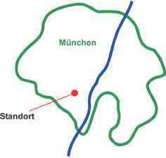

Kontakt
Garten- und Landschaftsbau
Inhaber: Kurt Schneider, Gartenbautechniker
Seehauser Straße 19,
81379 München
Telefon: (089) 714 52 15
Telefax: (089) 714 62 10
E-Mail: schneider@gartenbau-muenchen.com
Internet: www.gartenbau-muenchen.com
